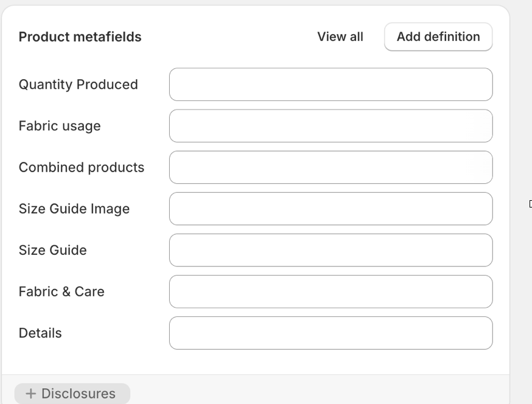
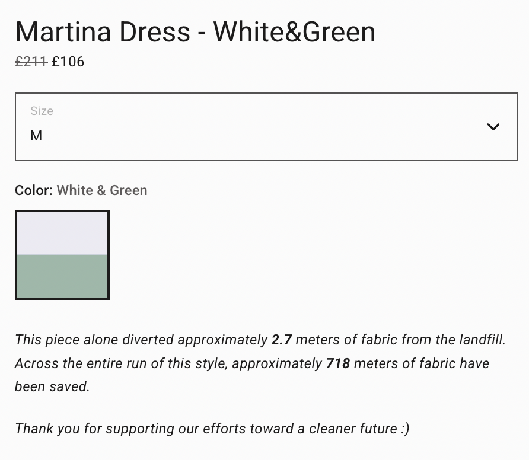
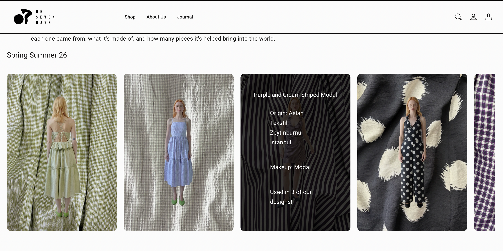

I had the opportunity to intern with OhSevenDays, an Istanbul-based fashion company that creates their clothes from deadstock fabric sourced from local textile mills. While their message to "use what already exists" was great, I found that they lacked transparency around just how much fabric they were actually saving from the landfill. This was reflected on the backend too — their data on fabric sourcing, amounts, composition, and more was scattered and fragmented. This wasn't something I was actually assigned to work on, but I saw the gap and decided to build a solution myself.
My project was threefold. First, I built a data structure and workflow for employees to log fabric information, such as color, origin, composition, cost, and more. This gave them real visibility into how much fabric they'd actually sourced, what went into each garment and how much, and how much was left over after the collection.

Second, I coded a dynamic section on their website that pulled from this data to show how much fabric each piece actually diverted from the landfill. This meant working within real platform constraints — for example, the tool I built on has no native way to sort entries by a computed value, so I encoded the computed data into sortable keys and decoded it at render time. I also designed the fabric display to filter dynamically by collection and season using the tags already on each product, rather than duplicating that information by hand for every new collection. This lets customers connect with the piece and understand the impact of their purchase; a product that reduces waste instead of contributing to it.

Then, I helped build a new page called Our Impact. After introducing OhSevenDays' mission, it includes a fabric log section where shoppers can learn more about the fabric used in a specific collection, pulling data like the number of pieces made from that fabric, its origin, and more.

Lastly, I wrote a full internal guide so OhSevenDays employees can update all of this themselves with each new collection. Since the guide needed to make sense to both developers and non-technical staff, I built it around a consistent color and formatting legend that distinguishes data objects, fields, UI actions, and code — so future employees can follow it without me there to explain it.
Overall, this experience taught me what it actually takes to make progress on sustainability from a business standpoint, rather than just talking about it. Building this system showed me firsthand how much organized information matters on both sides — for consumers to actually trust and understand the impact of what they're buying, and for a producer to make real decisions instead of guessing. It also showed me how easily an initiative like this can get pushed to the back burner when more pressing concerns come up, which made me appreciate how much sustainability work depends on someone actually building the infrastructure for it, not just believing in it.